此文为在centos7下安装Hadoop集群
前期准备
Hadoop的下载
本文下载的是2.8.0版本的Hadoop
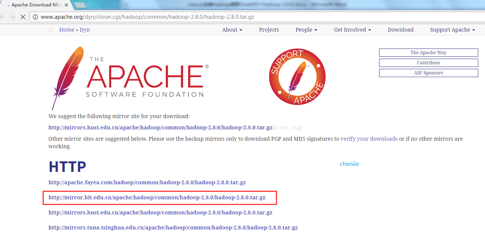
安装3个虚拟机并实现ssh免密码的登录
安装3个centos7虚拟机
安装方法：
安装3个机器，机器分别叫master slave1 slave2
如图：
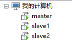
ps：为了免去后面一系列授权的麻烦，这里直接使用root账户登录和操作了。
使用ifconfig命令，查看着三台机器的ip。
我的机器名与ip 的对应的关系是：
192.168.236.132 master
192.168.236.133 slave1
192.168.236.134 slave2
检查机器名称
为了后续操作方便，确保机器的hostname是我们想要的。拿192.168.236.132机器举例，用root账户登录之后，然后使用hostname命令查看机器名称
如图：
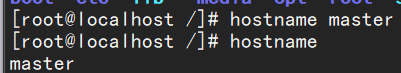
hostname命令查看名称一开始的名称是localhost
我们用hostname master命令更改机器名称为master
修改/etc/hosts文件
修改这3台机器的/etc/hosts文件，在文件中添加以下内容：
192.168.236.132 master
192.168.236.133 slave1
192.168.236.134 slave2
如图：
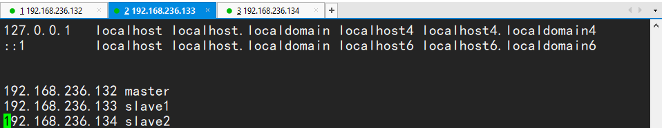
说明：ip地址没必要和我的一样，这里只是做一个映射，只要映射是对的就可以，至于修改方法，vi vim 命令都可以。
配置成功后使用 ping 命令检查者3台机器是否相互ping的通，以master为例，：
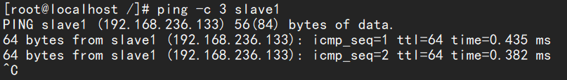
说明能够ping通
使用该命令 在各个机器都尝试是否可以ping通,ping得通，说明机器是互联的，而且hosts配置也正确。
给3个机器生成秘钥文件
以master为例，执行命令，生成空字符串的秘钥（后面要使用公钥），命令是：
ssh-keygen -t rsa
如图：
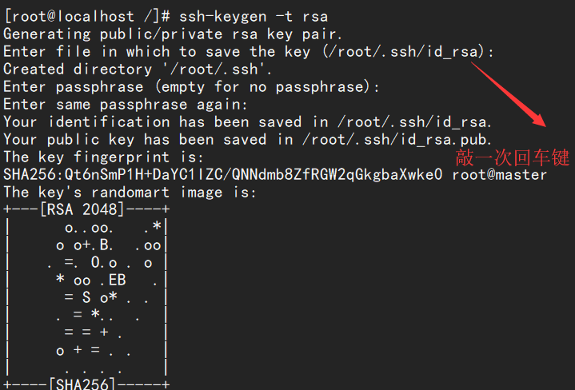
因为我现在使用的是root账户，所以秘钥文件保存到了/root/.shh/目录内，可以使用命令查看，命令是：
cd /root/.ssh
然后ls
如图：
使用相同的方法为slave1与slave2生成秘钥（命令相同，不用做任何修改）。
在master上创建authorized_keys文件
接下来要做的事情就是在3台机器的/root/.shh/目录下都存入一个内容相同的文件，文件名称叫authorized_keys，文件内容是我们刚才为3台机器生成的公钥。
为了方便，我下面的步骤是现在master上生成authorized_keys文件，然后把3台机器刚才生成的公钥加入到这个master的authorized_keys文件里，然后在将这个authorize_keys文件复制到slave1与slave2里。
首先使用命令，在master的/root/.ssh/目录中生成一个名为authorized_keys的文件，命令是：
touch /root/.shh/authorized_keys
如图：
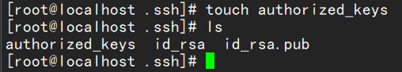
因为我已经在.ssh目录中了，所以直接在该目录打 touch authorized_keys 命令就可以
其次将master上的/root/.ssh/id_rsa.pub文件内容，slave1上的/root/.ssh/id_rsa.pub文件内容，slave2上的/root/.ssh/id_rsa.pub文件内容复制到这个authorized_keys文件中.
复制的方法很多了，可以用cat命令和vim命令结合来弄，也可以直接把这3台机器上的/root/.ssh/id_rsa.pub文件下载到本地，在本地将authorized_keys文件编辑好在上载到这3台机器上。master机器上我的/root/.ssh/id_rsa.pub内容是:
如图：
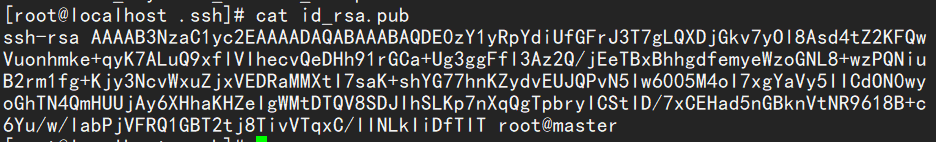
先将master的id_rsa.pub加到authorized_keys中：
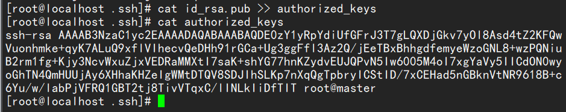
然后将slave1与slave2中的d_rsa.pub复制到master的authorized_keys中
如图：
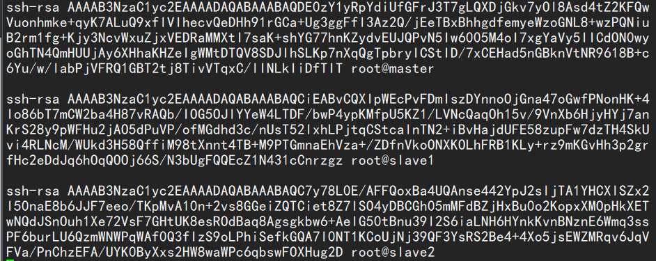
将authorized_keys文件复制到其他机器
master器的/root/.ssh/目录下已经有authorized_keys这个文件了，该文件的内容也已经OK了，接下来要将该文件复制到slave1的/root/.ssh/和slave2的/root/.ssh/。
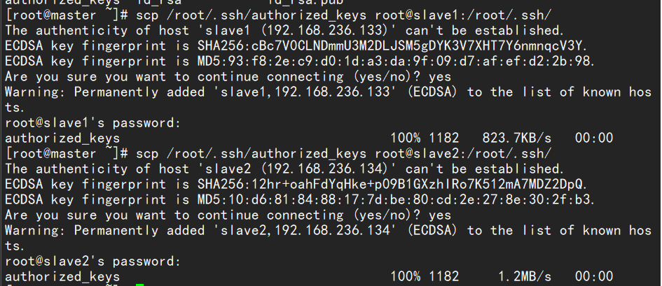
（输入yes）
测试使用ssh进行无密码登录
输入命令：
ssh slave1
如图：
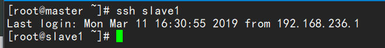
显示这样便就是连接成功，exit 命令退出
接下来便在 slave1与slave2中测试
安装Jdk与Hadoop
说明，为了省去一系列获取管理员权限，授权等繁琐操作，精简教程，这里都是使用root账户登录并且使用root权限进行操作。
安装jdk
安装：
可以参考我的Centos7下的Jdk安装
安装hadoop
注意：3台机器都要解压安装
上载文件并解压缩
在opt目录下新建一个名为hadoop的目录，并将下载得到的hadoop-2.8.0.tar上载到该目录下，如图:
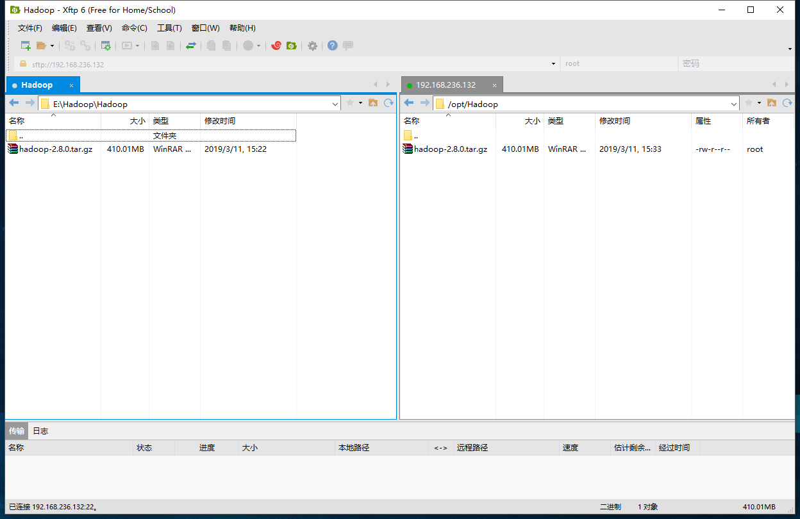
（此处使用的是xftp6）
然后进入到该目录，执行命令：
cd /opt/hadoop
执行解压命令：
tar -zxvf hadoop-2.8.0.tar.gz
说明：3台机器都要进行上述操作，解压缩后得到一个名为hadoop-2.8.0的目录
新建几个目录
mkdir /root/hadoop
mkdir /root/hadoop/tmp
mkdir /root/hadoop/var
mkdir /root/hadoop/dfs
mkdir /root/hadoop/dfs/name
mkdir /root/hadoop/dfs/data
修改etc/hadoop中的一系列配置文件
修改core-site.xml
修改/opt/hadoop/hadoop-2.8.0/etc/hadoop/core-site.xml文件
在<configuration>节点内加入配置:
<property>
<name>hadoop.tmp.dir</name>
<value>/root/hadoop/tmp</value>
<description>Abase for other temporary directories.</description>
</property>
<property>
<name>fs.default.name</name>
<value>hdfs://master:9000</value>
</property>
修改hadoop-env.sh
修改/opt/hadoop/hadoop-2.8.0/etc/hadoop/hadoop-env.sh文件
将export JAVA_HOME=${JAVA_HOME}
修改为：
export JAVA_HOME=/opt/java/jdk1.8.0_201
说明：修改为自己的JDK路径
修改hdfs-site.xml
修改/opt/hadoop/hadoop-2.8.0/etc/hadoop/hdfs-site.xml文件
在<configuration>节点内加入配置:
<property>
<name>dfs.name.dir</name>
<value>/root/hadoop/dfs/name</value>
<description>Path on the local filesystem where theNameNode stores the namespace and transactions logs persistently.</description>
</property>
<property>
<name>dfs.data.dir</name>
<value>/root/hadoop/dfs/data</value>
<description>Comma separated list of paths on the localfilesystem of a DataNode where it should store its blocks.</description>
</property>
<property>
<name>dfs.replication</name>
<value>2</value>
</property>
<property>
<name>dfs.permissions</name>
<value>false</value>
<description>need not permissions</description>
</property>
说明：dfs.permissions配置为false后，可以允许不要检查权限就生成dfs上的文件，方便倒是方便了，但是你需要防止误删除，请将它设置为true，或者直接将该property节点删除，因为默认就是true。
新建并且修改mapred-site.xml
在该版本中，有一个名为mapred-site.xml.template的文件，复制该文件，然后改名为mapred-site.xml，命令是：
cp /opt/hadoop/hadoop-2.8.0/etc/hadoop/mapred-site.xml.template /opt/hadoop/hadoop-2.8.0/etc/hadoop/mapred-site.xml
修改这个新建的mapred-site.xml文件，在<configuration>节点内加入配置:
<property>
<name>mapred.job.tracker</name>
<value>master:49001</value>
</property>
<property>
<name>mapred.local.dir</name>
<value>/root/hadoop/var</value>
</property>
<property>
<name>mapreduce.framework.name</name>
<value>yarn</value>
</property>
修改slaves文件
修改/opt/hadoop/hadoop-2.8.0/etc/hadoop/slaves文件，将里面的localhost删除，添加如下内容：
slave1
slave2
只在master中做修改
修改yarn-site.xml文件
修改/opt/hadoop/hadoop-2.8.0/etc/hadoop/yarn-site.xml文件，
在<configuration>节点内加入配置(注意了，内存根据机器配置越大越好，我这里只配2个G是因为机器不行):
<property>
<name>yarn.resourcemanager.hostname</name>
<value>master</value>
</property>
<property>
<description>The address of the applications manager interface in the RM.</description>
<name>yarn.resourcemanager.address</name>
<value>${yarn.resourcemanager.hostname}:8032</value>
</property>
<property>
<description>The address of the scheduler interface.</description>
<name>yarn.resourcemanager.scheduler.address</name>
<value>${yarn.resourcemanager.hostname}:8030</value>
</property>
<property>
<description>The http address of the RM web application.</description>
<name>yarn.resourcemanager.webapp.address</name>
<value>${yarn.resourcemanager.hostname}:8088</value>
</property>
<property>
<description>The https adddress of the RM web application.</description>
<name>yarn.resourcemanager.webapp.https.address</name>
<value>${yarn.resourcemanager.hostname}:8090</value>
</property>
<property>
<name>yarn.resourcemanager.resource-tracker.address</name>
<value>${yarn.resourcemanager.hostname}:8031</value>
</property>
<property>
<description>The address of the RM admin interface.</description>
<name>yarn.resourcemanager.admin.address</name>
<value>${yarn.resourcemanager.hostname}:8033</value>
</property>
<property>
<name>yarn.nodemanager.aux-services</name>
<value>mapreduce_shuffle</value>
</property>
<property>
<name>yarn.scheduler.maximum-allocation-mb</name>
<value>2048</value>
<discription>每个节点可用内存,单位MB,默认8182MB</discription>
</property>
<property>
<name>yarn.nodemanager.vmem-pmem-ratio</name>
<value>2.1</value>
</property>
<property>
<name>yarn.nodemanager.resource.memory-mb</name>
<value>2048</value>
</property>
<property>
<name>yarn.nodemanager.vmem-check-enabled</name>
<value>false</value>
</property>
说明：yarn.nodemanager.vmem-check-enabled这个的意思是忽略虚拟内存的检查，如果你是安装在虚拟机上，这个配置很有用，配上去之后后续操作不容易出问题。如果是实体机上，并且内存够多，可以将这个配置去掉。
然后用 scp命令传到 slave1与slave2中
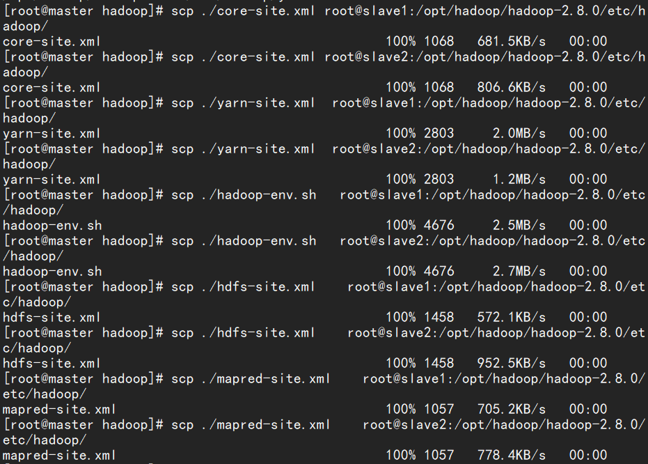
启动hadoop
在namenode上执行初始化
因为master是namenode，slave1和slave2都是datanode，所以只需要对master进行初始化操作，也就是对hdfs进行格式化。
进入到master这台机器的/opt/hadoop/hadoop-2.8.0/bin目录，也就是执行命令：
cd /opt/hadoop/hadoop-2.8.0/bin
执行初始化脚本，也就是执行命令：
./hadoop namenode -format
如图：
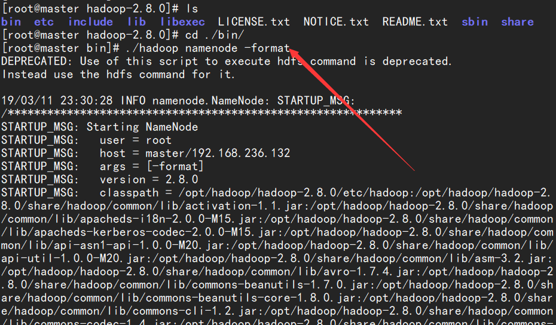
稍等几秒，不报错的话，即可执行成功，如图：
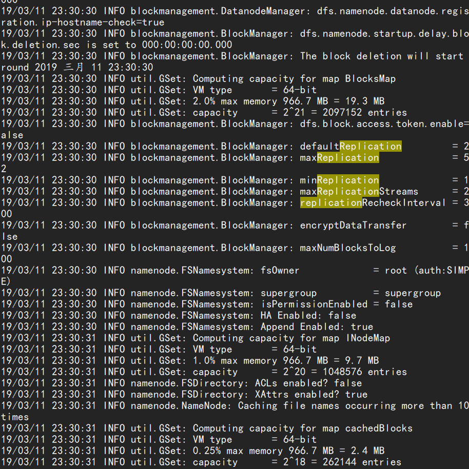
格式化成功后，可以在看到在/root/hadoop/dfs/name/目录多了一个current目录，而且该目录内有一系列文件：
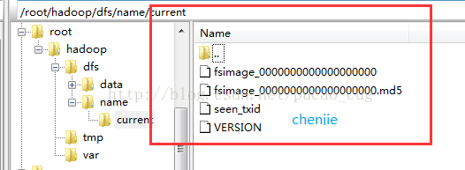
在namenode上执行启动命令
因为master是namenode，slave1和slave2都是datanode，所以只需要再slave2上执行启动命令即可。
进入到master这台机器的/opt/hadoop/hadoop-2.8.0/sbin目录，也就是执行命令：
cd /opt/hadoop/hadoop-2.8.0/sbin
执行初始化脚本，也就是执行命令：
./start-all.sh
第一次执行上面的启动命令，会需要我们进行交互操作，在问答界面上输入yes回车
如图：
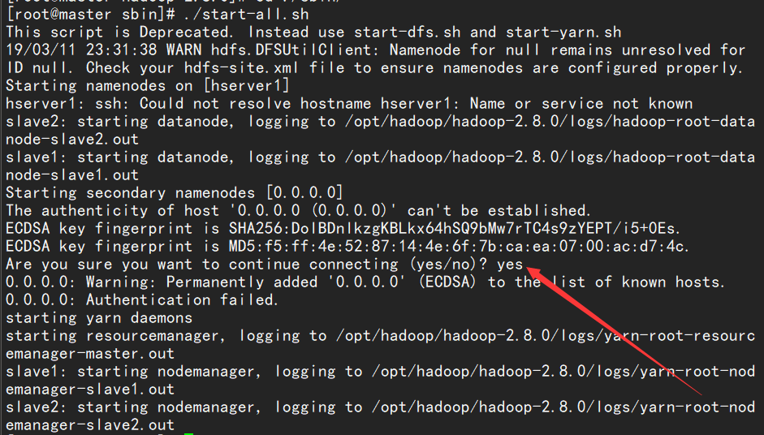
关闭防火墙：
systemctl stop firewalld.service
不关闭防火墙的话，web页面访问不了！！！
master是我们的namanode，该机器的IP是192.168.236.132，在本地电脑访问如下地址:
http://192.168.236.132:50070/
自动跳转到了overview页面
如图：
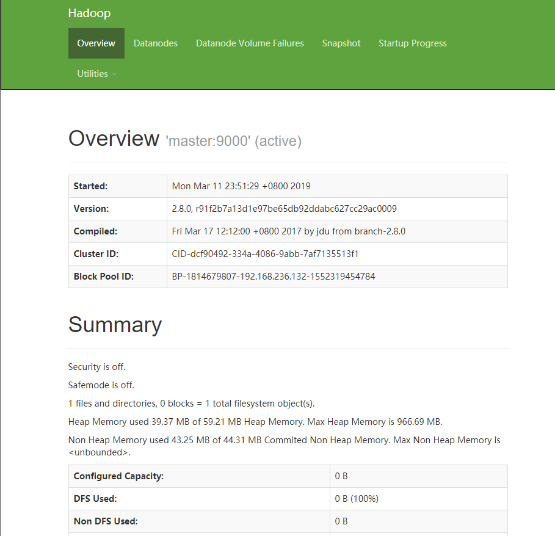
在本地浏览器里访问如下地址：
自动跳转到了cluster页面
如图：
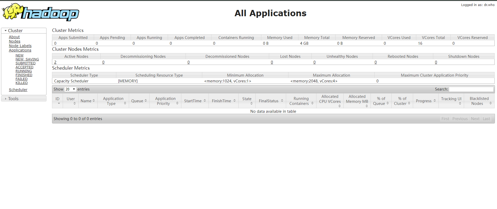
Hadoop安装完成！
报错处理
想执行hadoop命令，结果报错：hadoop：未找到命令。
原因是hadoop的安装路径没有加入到当前路径中。解决办法有两个：
一．进入hadoop的安装目录，在执行hadoop命令时在前面加上：./bin ./sbin
二．在/etc/profile文件中添加hadoop的安装路径：
sudo vim /etc/profile
加入：
export HADOOP_HOME=/opt/hadoop/hadoop-2.8.0/
export PATH=$HADOOP_HOME/bin:$HADOOP_HOME/sbin:$PATH
保存后退出。
执行：
source /etc/profile